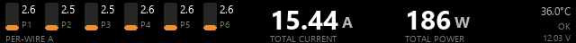
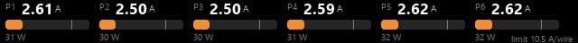

WireView Pro II on the Corsair iCUE Nexus
Live per-wire current, total current and total power from a Thermal Grizzly WireView Pro II on the 640×48 iCUE Nexus. iCUE cannot show third-party sensors or web pages on the Nexus, so a small Python daemon paints the panel directly over USB.
Source and setup: github.com/jlobue10/wireview-nexus
Layouts

--layout combined · six per-wire bars, total current, total power, temperature
--layout per-wire · six wide per-wire bars with amps and watts--layout total-current · total amps against the total limit--layout total-power · total watts against the cable ratingHow it works
WireView Pro II ──USB serial──▶ nexus_wireview.py ──HID frames──▶ iCUE Nexus
- Install with one PowerShell command:
powershell -ExecutionPolicy Bypass -c "irm https://raw.githubusercontent.com/jlobue10/wireview-nexus/main/install.ps1 | iex". It fetches the files, sets up Python, and starts the daemon at login. - The daemon reads the WireView directly over its USB serial port (no HWiNFO needed). Close the Thermal Grizzly WireView app and disable its auto-start; only one program can hold the port. If a wireview-xeneon-edge bridge is running, the daemon reads from it instead.
- Give the Nexus an empty screen in iCUE so iCUE stops redrawing over the daemon's frames.
Options
| Option | Default | Meaning |
|---|---|---|
--layout | combined | combined, per-wire, total-current, total-power |
--wire-limit | 10.5 | Amps per wire treated as 100 % |
--total-limit | 55 | Amps total treated as 100 % |
--cable-w | cable's own rating | Cable rating in W |
--fps | 2 | Frames per second |
--brightness | Backlight 0–100, set once at start | |
--source | auto | auto, bridge, serial, hwinfo |
--serial-port | auto-detect | COM port of the WireView |
--preview PNG | Render one frame to a file and exit |